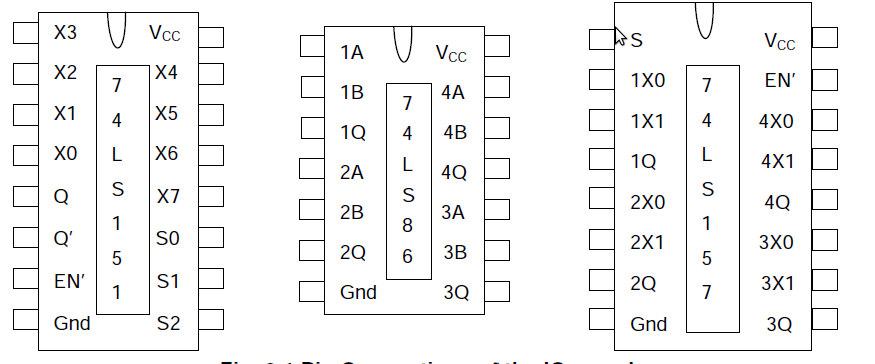
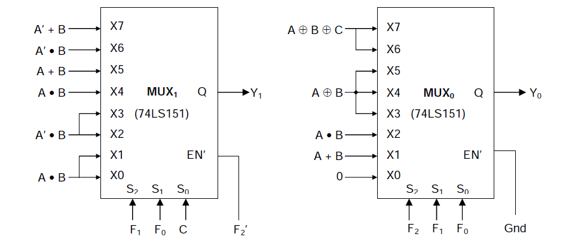

This module explains how to build a Programmable 1-bit ALU. In computing, an arithmetic logic unit (ALU) is a digital circuit that performs arithmetic and logical operations. The ALU is a fundamental building block of the central processing unit of a computer, and even the simplest microprocessors contain one for purposes such as maintaining timers.

Most ALUs can perform the following operations:
Bitwise logic operations (AND, NOT, OR, XOR)
Integer arithmetic operations (addition, subtraction, and sometimes multiplication and division, though this is more expensive)
Bit-shifting operations (shifting or rotating a word by a specified number of bits to the left or right, with or without sign extension). Shifts can be seen as multiplications and divisions by a power of two.
Inputs and Outputs
The inputs to the ALU are the data to be operated on (called operands) and a code from the control unit indicating which operation to perform. Its output is the result of the computation.

Programmable 1-bit ALU
In this experiment, an Arithmetic and Logic Unit (ALU) capable of performing 8 Arithmetic/Logic functions on 1-bit operands, will be designed, assembled and tested. The circuit will consist of two 8-input multiplexers (74LS151), one quad 2-input multiplexer (74LS157) and one quad 2-input XOR gate (74LS86), all belonging to the TTL family.
ALU Function Table
| F2F1F0 | ALU Function | Y1 | Y0 |
| 000 | 0(Zero) | - | 0 |
| 001 | A OR B | - | A+B |
| 010 | A AND B | - | A.B |
| 011 | A EXOR B | - | A^B |
| 100 | A PLUS B | Carry | Sum |
| 101 | A MINUS B | Borrow | Difference |
| 110 | A PLUS B PLUS C | Carry | Sum |
| 111 | A MINUS B MINUS C | Borrow | Difference |
PIN connections for the IC's

The final ALU output bits Y0 and Y1 will be generated by the two 8-input multiplexers – referred to as MUX0 and MUX1 respectively(both 74LS157).
MUX0 is always enabled, while MUX1 is enabled only when F2 = 1, i.e. for Arithmetic functions only. This is because Y1 is required only to provide the CARRY/BORROW output for Arithmetic functions.

The two 8-input multiplexers MUX0 and MUX1 require 16 inputs, they involve only 6 distinct Boolean functions of A, B, C – A • B, A’ • B, A + B, A’ + B, A ⊕ B and A ⊕ B ⊕ C. The first four terms are realised by four 2-input multiplexers
Source: Wikipedia

- The objective of this experiment is to understand working of ALU.
- First of all make ALU according to the theory page.And analyze its output for different values.


Digital Logic Design
This lab allows you to design and simulate any digital
combinational or sequential circuit. Following instruction help you
build the circuit. A Java-based basic tool and simulation enigne is
at the hear of this laboratory. You can create many circuits and
test them with fixed or time-varying input signals. You can also see
the outputs as values or time-varying waveforms.
The tool consist of mainly four pannels: Left Pannel, Mid Pannel, Right Pannel, and Top Pannel.
Left Pannel
Gate Buttons: These buttons are used to draw basic gates like AND, OR, XOR, NOT, NOR, NAND,XNOR andCONNECTOR . Click on these by drop down menu then select the proper number of inputs . Once You have finalized the gate & number of inputs then click on SELECT Button and place the gate where you want to in the mid pannel drawing area.
Probe: Output at each terminal is shown by default against it. Iif you want explicitly to watch another node, you can probe it using a feature from the left panel.
None: It is used to get default cursor option back, so that you can do basic operation like drag and drop.
Delete Element: This is used for explicitly deleting an element. Click on the element after selecting delete mode.
Connect/Disconnect: This mode allows establishing and removing connection between various points. Connection can be established only from output to input. You have to first click to the output node then to the input node (consisting of red square box). For disconnection, you can start by clicking either the input or the output node.
Naming: This is used to give a user-selected name to an input or output node. Click on the node and give the name into the input box that pops up.
Output: This is used to define an output node. See the explanation of import button to learn why this may be necessary.
Time Pulse: Enter the time pulse pattern separated by commas. For example: 0,10,10,10,10 defines a clock that is 0 for 10 units and 1 for 10 units. Press enter or click on the new timepulse to create it. It will be available as input in list box.
Binary One And Zero: These can be used to give fixed values to terminals
Top Pannel
Clear: Use this to clear every element on the circuit. Caution: Everything on the design panel will be lost; there is no undo!
Save: Use this to save the designed circuit as a file on your machine. This file can be loaded and imported later.
Load: A circuit saved on your machine can be loaded onto the mid panel to as a fresh circuit that can be further edited.
Import: This is an important feature that lets you construct building blocks. A circuit from your machine is imported to the mid panel, but will appear as a block or a box with input and output terminals. The name of the element is that of the imported file. The named terminals will have their saved names. The input and output nodes will come in the same order from top to bottom as created. This allows one to build on circuits saved as blocks. For instance, an full adder you design using gates can be saved as a block and used in later circuits as an adder-block.
Simulate: Use this to simulate or compute the intermediate and final outputs of the whole circuit, if all the terminal inputs are present. It also computes the gate delays, which is diplayed when the mouse hovers over each element. The default gate delay is -1. Simulation can fail or give ambiguous result if the circuit does not stablizes with time. This can happen due to improper feedback circuitry. The underlying engine is not a full fledged circuit simulator and can get stuck at constructions involving certain feedback.
Mid Pannel: This is the drawing area used to build the circuit. You can move the elements by clicking and dragging.
Right Pannel: This area shows the time-varying inputs, outputs, and probed points. Name or index associated with points are displayed. Indexes are given top to bottom.
Note: Sample circuit for each experiment will be given as default. You can try them with the help of load_it or impor_itt button.It is advised try to built circuit of your own before trying the default circuit.

1) Design the ALU circuit as given in the theory section.

- With The help of Theory Page , try to build the ALU Circuit.
- If You are unable to make it , load or export the circuit directly and use it
- Try to put various values and see whether it satisfies the Truth Tabel or not

- ALU - Wikipedia
- Chapter 5 : Combinational Logic with MSI and LSI, "Digital Logic and Computer Design" - M. Morris Mano